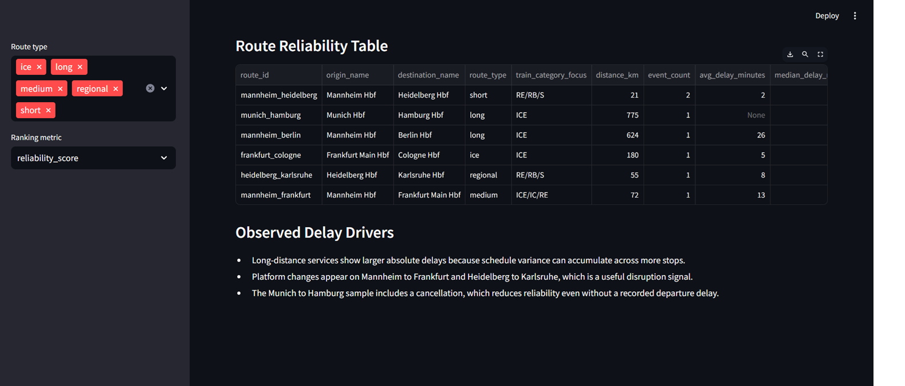

Azure Data Engineer • ETL/ELT • REST APIs • Power BI
Darpen
Bhandari
Azure Data Engineer with 5 years of experience building Azure-native data platforms across finance and healthcare, including medallion lakehouses, dbt models, CI/CD quality gates and leadership of a six-engineer team.
5
Years Experience
22
Financial Applications Supported
100%
SLA Compliance Across Portfolio Apps

// ABOUT
Who I Am
I am a Data Engineer based in Mannheim with 5 years of experience building Azure-native data platforms across finance and healthcare. I design ADF pipelines, medallion lakehouses, dbt transformation layers and automated data-quality controls that turn operational data into trusted reporting products. My experience includes leading a six-engineer team, maintaining 100% SLA compliance across 22 financial applications and automating more than 10 hours of weekly reconciliation work. I hold an M.Sc. in Applied Data Science and Analytics and am immediately available for Data Engineering roles.
// EXPERIENCE
Professional Experience
Data and System Analytics Associate
Universitätsklinikum Heidelberg | Heidelberg, Germany | 12/2025 - 05/2026
- Reduced manual reporting effort by 20% by building Python-based REST API ingestion pipelines between qTest and Matrix42.
- Designed end-to-end ADF pipelines with parameterized triggers, incremental loads and ADLS integration for scheduled SLA monitoring.
- Improved Power BI reliability through dbt staging, intermediate and mart models with automated schema, relationship and null-value tests.
- Introduced GitHub Actions CI/CD gates running dbt tests, SQL checks and pipeline configuration validation before deployment.
- Partnered with IT service management teams to define reporting requirements, SLA definitions and recurring KPI analysis.
Senior Software Engineer
Hexaware Technologies Pvt Ltd. | Navi Mumbai, India | 03/2019 - 10/2023
- Led a team of six data engineers delivering pipeline and reporting solutions across 22 US financial portfolio applications.
- Maintained 100% SLA compliance by architecting ADF pipelines with incremental loads, failure alerting and automated retries.
- Saved almost 10 hours of weekly reconciliation work by replacing manual Excel-based AUM and performance reports with automated Python and SQL pipelines.
- Designed a Parquet-based ADLS medallion architecture with Bronze, Silver and Gold layers for reusable portfolio data products.
- Modelled curated outputs as star-schema facts and dimensions with automated null, duplicate and reconciliation-gap checks.
// PROJECTS
Featured Project


Python • PySpark • dbt • Streamlit • AWS-ready Lakehouse
DB Train Delay and Route Reliability Pipeline
Built an end-to-end data engineering project that ingests German rail departure data, models route-level reliability metrics and visualizes delay patterns across short, long, regional and ICE routes.
Important findings
The dashboard shows 10.8 minutes average delay, 66.7% delay frequency and 16.7% cancellation rate across the sample routes, with Mannheim-Heidelberg ranking most reliable and Mannheim-Frankfurt most disrupted.
Skills demonstrated
Python ingestion, PySpark transformations, dbt staging/intermediate/mart models, route reliability scoring, data quality tests, CI/CD checks, AWS S3/Glue/Athena design and Streamlit dashboarding.
// SKILLS
Skill Levels
// DATA ENGINEERING
// CLOUD & DATA PLATFORMS
// ANALYTICS & BI
// LANGUAGES
// CREDENTIALS
Education, Certifications & Availability
M.Sc. Applied Data Science and Analytics
SRH Hochschule Heidelberg, completed September 2025. Master's thesis focused on a Smart Energy Forecasting Pipeline.
Certifications
Microsoft Azure Fundamentals (AZ-900), Databricks for Data Engineering and NVIDIA Deep Learning Fundamentals.
Based in Mannheim, Immediately Available
English C1, German B1 and a valid German residence permit. Open to Data Engineering roles across Germany and Europe.
// VALUE
What I Bring
Data Pipeline Ownership
I design reliable pipelines from ingestion through curated marts, with incremental loading, monitoring, automated retries and production-focused validation.
Azure Data Engineering
I build Azure-native medallion lakehouses with ADF, ADLS, Databricks, Parquet and dbt transformation layers.
Business-Focused Reporting
I bring team-lead experience, cross-functional delivery and a record of measurable outcomes including 100% SLA compliance and major reporting automation.